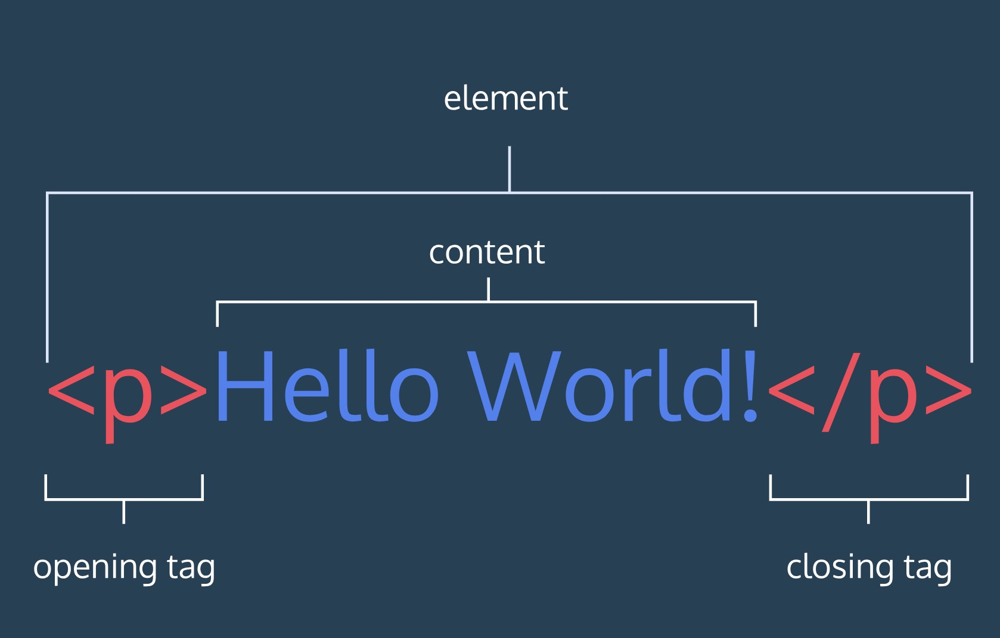
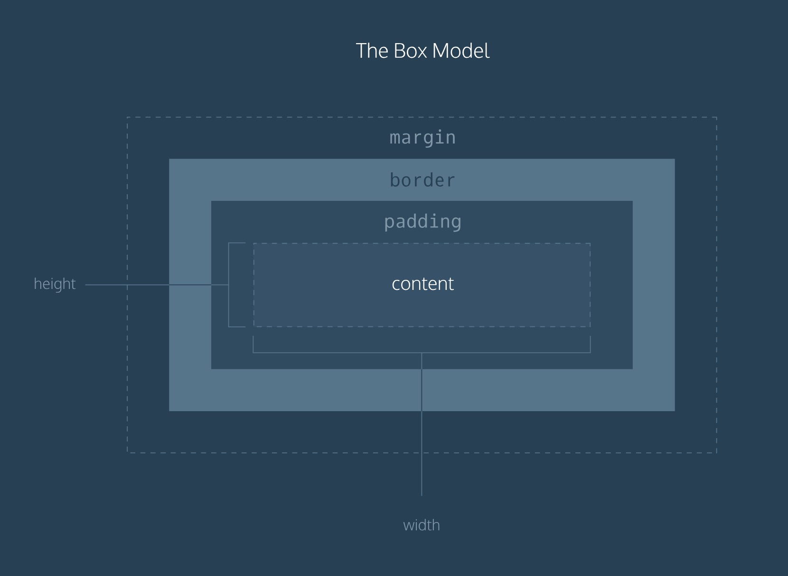

Введение в HTML
Тэг

Структура HTML

<!DOCTYPE html> <!-- Объявление формата документа -->
<html>
<head> <!-- Техническая информация о документе -->
<meta charset="UTF-8"> <!-- Определяем кодировку символов документа -->
<title>...</title> <!-- Задаем заголовок документа -->
<link rel="stylesheet" type="text/css" href="style.css"> <!-- Подключаем внешнюю таблицу стилей -->
<script src="script.js"></script> <!-- Подключаем сценарии -->
</head>
<body> <!-- Основная часть документа -->
</body>
</html>
Тэг <body>
<body>
<p checked class="title" id='title'>Title</p>
<!-- here goes the rest of the page -->
</body>
<!-- Создайте тег body с вложенным элементом p с текстом "Здесь должен быть текст содержания" -->
Заголовки
<h1>Заголовок 1</h1>
<h2>Заголовок 2</h2>
<!--
Продолжите список заголовков. На каком заголовке не будет меняться стиль текста?
-->
Заголовок1
aaa
aaa6
Div
<body>
<div>
<h1>Why use divs?</h1>
<p>Great for grouping elements!</p>
</div>
</body>
<!--
Сгруппируйте h2 и p в div. Тег h2 напишите "Группа элементов"
-->
Заголовок1
aaa
aaa6
Атрибуты
<div id="intro">
<h1>Introduction</h1>
</div>
<!--
Добавить атрибут id, class, style
-->
Отображение текста
<div>
<p>Параграф 1</p>
<span>Текст 1.1</span>
<span>Текст 1.2</span>
<span>Текст 1.3</span>
<p>Параграф 2</p>
<span>Текст 2.1</span>
<span>Текст 2.2</span>
<span>Текст 2.3</span>
</div>
Параграф 1
Текст 1.1 Текст 1.2 Текст 1.3Параграф 2
Текст 2.1 Текст 2.2 Текст 2.3
<!--
Напишите текст, используя параграфы и спаны.
-->
Стилизация текста
<p><strong>The Nile River</strong> is the <em>longest</em> river in the world, measuring over 6,850 kilometers long (approximately 4,260 miles).</p>
The Nile River is the longest river in the world, measuring over 6,850 kilometers long (approximately 4,260 miles).
<!--
Напишите текст, используя стилизацию
-->
Ненумерованные списки
<ul>
<li>HTML</li>
<li>CSS</li>
<li>JS</li>
</ul>
- HTML
- CSS
- 1
- 1
- 1
- 2
- 2
- 2
- JS
<!--
Сделайте список из элементов
-->
Нумерованные списки
<ol>
<li>HTML</li>
<li>CSS</li>
<li>JS</li>
</ol>
- HTML
- CSS
- JS
- React
- Redux
- 1
- 2
- Router
- Angular
<!--
Переделайте старый список в нумерованный
-->
Изображения
<img src="https://media.giphy.com/media/ZVik7pBtu9dNS/giphy.gif" />


<!--
Добавьте ссылку в img. Например: "https://media.giphy.com/media/xTiTnnLkYTDWSOWSHK/giphy.gif"
-->
Видео
<video src="https://s3.amazonaws.com/codecademy-content/courses/freelance-1/unit-1/lesson-2/htmlcss1-vid_brown-bear.mp4" width="320" height="240" controls>
Video not supported
</video>
<!--
Под картинкой добавьте видео с ссылкой https://www.quirksmode.org/html5/videos/big_buck_bunny.webm
-->
Тег Head
<head>
</head>
<!--
Добавьте секцию head
-->
Page Titles
<head>
<title>Blog</title>
</head>
<!--
Добавьте title. Как проверить?
-->
Ссылки на другие страницы
<a href="https://www.wikipedia.org/">This Is A Link To Wikipedia</a>
<a href="./img/tag.jpg">Локальная ссылка</a>
<!--
1. Сделать ссылку на другую страницу (которую делали ранее)
2. Сделать ссылку на ресурс
-->Введение в CSS
Инлайновые стили
<p style="color: red; font-size: 20px;">I'm learning to code!</p>
I'm learning to code!
<!--
Повторить c color:red
-->
Тэг <style>
<style>
p {
margin: 20px;
}
.yellow {
background-color: yellow;
}
</style>
<!--
Поместите в тег style color: green для тега p
-->
.css файл
p {
margin: 20px;
}
.yellow {
background-color: yellow;
}
<!--
В файл style.css поместите style color: blue для тега p
-->
Добавляем css файл
<link href="./style.css" type="text/css" rel="stylesheet">
<!--
Добавить в тег head наш созданный файл style.css
-->
CSS селекторы
по тегу
p {
color: red;
}
по классу
.green {
color: green;
}
.bold {
font-weight: bold;
}
<h1 class="green bold">Объединение классов</h1>
по id
#large-title {
font-weight: bold;
}
<h1 id="large-title">Заголовок ID</h1>
специфичность
h1 {
color: red;
}
.headline {
color: firebrick;
}
<h1 class="headline">Заголовок</h1>
мультиселекторы
h1.special {
font-weight: bold;
}
<h1 class="special">Заголовок</h1>
<div class="special">Контент</h1>
вложенные селекторы
.main-list li {
}
<ul class='main-list'>
<li> ... </li>
<li> ... </li>
<li> ... </li>
</ul>
<!--
Сделать пример с id, с использованием мультиселектора и с вложенным селектором
-->
Font
font-family
h1 {
font-family: "Courier New";
}
font-size
p {
font-size: 18px;
}
font-weight
p {
font-weight: bold;
}
text-align
p {
text-align: right;
}
color
p {
color: right;
}
<!--
Полужирный текст на желтом фоне, выровненный по центру внутри тега p
-->
Фоновая картника
.main-banner {
background-image: url("http://media.giphy.com/media/Jrd9E2kuPuOYM/giphy.gif");
}
<!--
Повторить
-->
Текст внутри картинки
Box Model

высота и ширина
p {
height: 80px;
width: 240px;
}
граница
p {
border: 3px solid coral;
}
отступ внутри
p.content-header {
border: 3px solid coral;
padding: 10px;
}
отступ снаружи
p.content-header {
border: 3px solid coral;
margin: 20px;
}
<!--
Сделать тег p с текстом и добавить height, width, border, margin, padding
-->